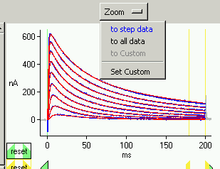

Zooming

Zoom Menu Button
The zoom menu button is located at the top of the plot as shown at the
right.
It translates and scales the data so that within the plot you see:
- the data within the voltage step
- all of the data
- a custom user-defined portion of the data (disabled until the
custom view has been set).
- The last entry defines the custom zoom setting as whatever is
currently displayed on the plot.
If one of the three settings, "step", "all", or "custom" is currently being
viewed, then that selection is shown in blue on the menu.
Mouse Zooming
- Left button click:
- Zoom in by a factor of 1.5 centred around the cursor position
- Middle or right button click:
- Zoom out by a factor of 1.5 centred around the cursor position
- Left button double-click:
- Zoom to view step data (same as selecting "to step data" from the zoom
menu)
- Middle or right button double-click:
- Zoom to view all data (same as selecting "to all data" from the zoom
menu)
- Left mouse button click-drag-release:
- Zoom in so contents of drag box fill the whole plot
- Middle or right mouse button click-drag-release:
- Zoom out so current plot fits within drag box